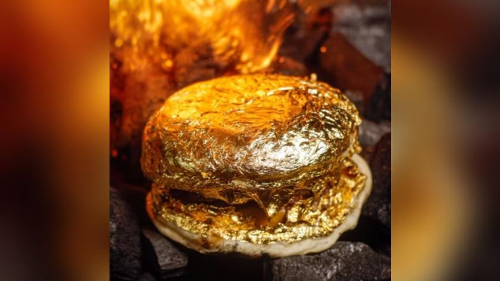

Menú Exclusivo
ARROZ CON POLLO
Descripción del plato 1. este plato es sinónimo de invitados, es la excusa perfecta para crear una de esas reuniones familiares, en donde se comparten anécdotas, historias y por supuesto, el auténtico sabor de mi tierra. Desde que recuerdo, en mi casa era una costumbre que mi madre preparara Arroz con Pollo los domingos. La recuerdo desde muy tempranito, cortando cuidadosamente el pollo, adobándolo y dejando cocinar a fuego lento en su propio jugo. Según ella el secreto de su exquisito sabor es el amor y el tiempo de cocción.
Valor: $30.000

BANDEJA PAISA
Descripción del plato 2. Una combinación perfecta de texturas.Por un la te tenemos el frijol granos suaves que se desacen en tu boca, al lado estara el arroz un arroz suelto, tambien lleva, una tilapia, un chorizo, chicharron, aguacate,huevo, maduro no el de venezuela es maduro colombiano delicioso no te lo puedes perder.
Valor: $40.000

HAMBURGUESA BAÑADA EN ORO
Descripción del plato 3. Una experiencia gastronómica inigualable.Y si no quedo satisfecho con el arroz con pollo o la bandeja pais, aqui esta la hamburguesa bañada en oro.Este manjar, hecho con varios ingredientes costosos y cuyo pan está bañado en oro de 24 quilates, cuesta cerca de USD 2.300
Valor: $5.000.000
